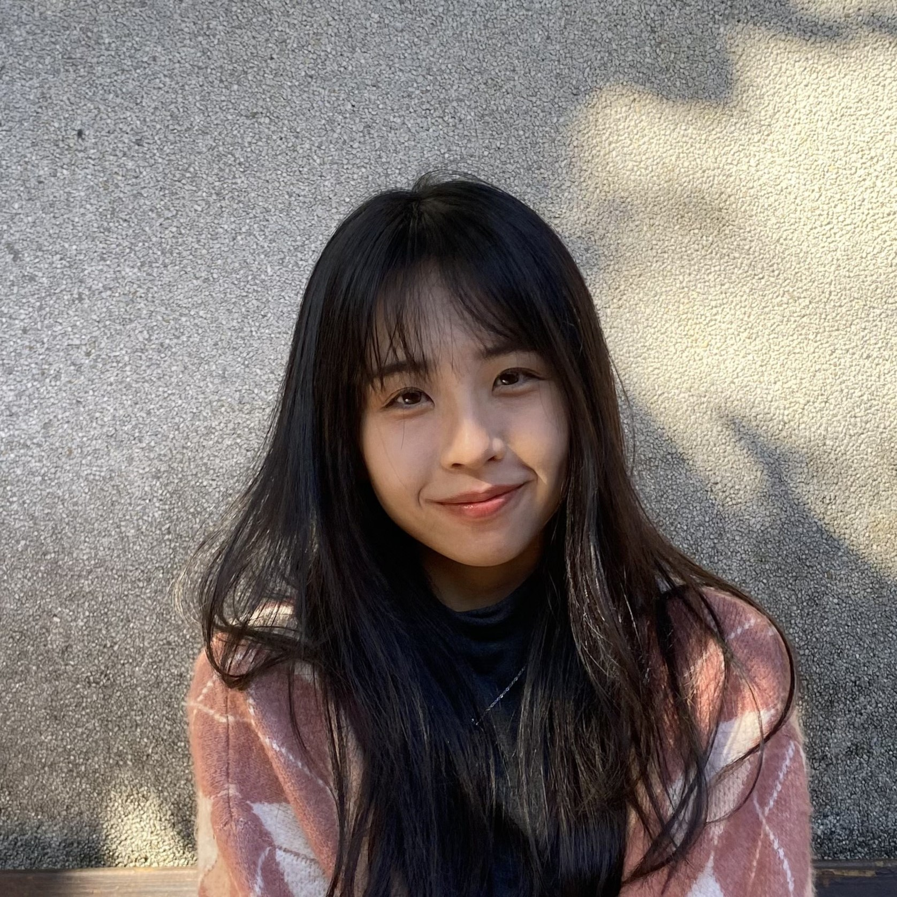

<div class="container-fluid">
    <div class="profile-bg">
        <div class="colored"></div>

        <div class="profile-center">

            <div class="profile-card fade-in-left">

                <div class="photo">
                    
                </div>

                <h2>林芷妤 <br>Yurie Lin</h2>
                <hr>
                <h3>FRONTEND ENGINEER</h3>
            </div>

            <div class="intro fade-in-right">
                <h1>Hello!</h1>
                <h3>我是林芷妤，前端工程師</h3>
                <div class="d-flex">
                    <button class="btn-primary-r100" routerLink="/resume">RESUME</button>
                    <button class="btn-secondary-r100" routerLink="/projects">PROJECTS</button>
                </div>
                <ul class="my-description">
                    <li>喜歡發掘新觀點，用不同的角度分析問題</li>
                    <li>細心檢視、謹慎溝通，完整重現 UI/UX 設計師交付的畫面</li>
                    <li>注重細節，精準對齊像素，同時達成流暢的 RWD 操作體驗</li>
                </ul>
            </div>
        </div>

    </div>

</div>